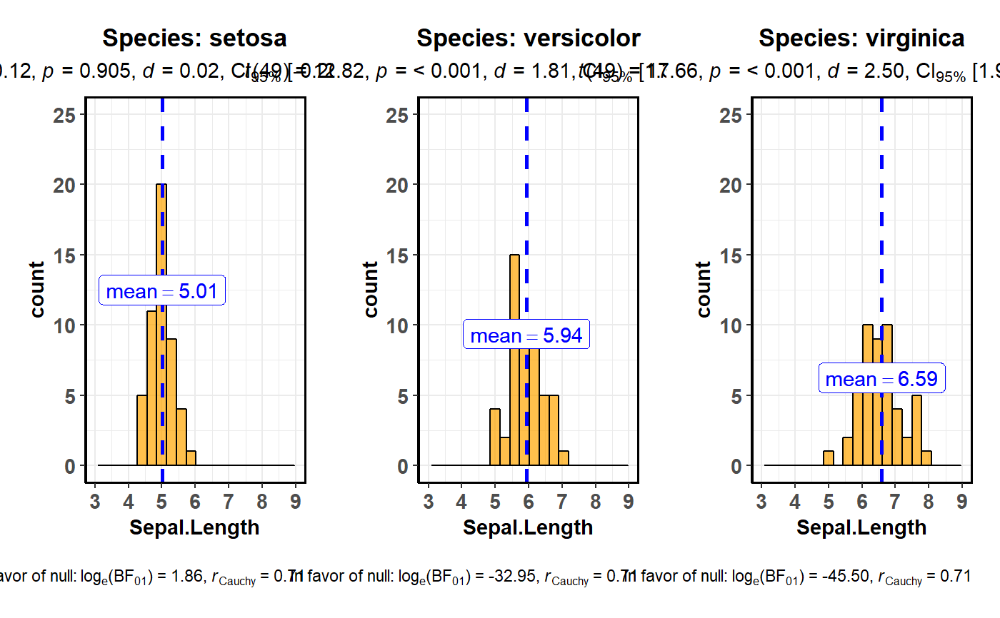

grouped_gghistostats.RdHelper function for ggstatsplot::gghistostats to apply this
function across multiple levels of a given factor and combining the
resulting plots using ggstatsplot::combine_plots.
grouped_gghistostats(data, x, grouping.var, title.prefix = "Group", binwidth = NULL, bar.measure = "count", xlab = NULL, title = NULL, subtitle = NULL, caption = NULL, type = "parametric", test.value = 0, bf.prior = 0.707, bf.message = FALSE, robust.estimator = "onestep", nboot = 500, k = 3, ggtheme = ggplot2::theme_bw(), ggstatsplot.layer = TRUE, fill.gradient = FALSE, low.color = "#0072B2", high.color = "#D55E00", bar.fill = "grey50", results.subtitle = TRUE, centrality.para = "mean", centrality.color = "blue", centrality.size = 1.2, centrality.linetype = "dashed", centrality.line.labeller = TRUE, centrality.k = 2, test.value.line = FALSE, test.value.color = "black", test.value.size = 1.2, test.value.linetype = "dashed", test.line.labeller = TRUE, test.k = 0, messages = TRUE, ...)
| data | Dataframe from which variables specified are preferentially to be taken. This argument is optional. |
|---|---|
| x | A numeric variable. |
| grouping.var | Grouping variable. |
| title.prefix | Character specifying the prefix text for the fixed plot
title (name of each factor level) (Default: |
| binwidth | The width of the bins. Can be specified as a numeric value,
or a function that calculates width from |
| bar.measure | Character describing what value needs to be represented as
height in the bar chart. This can either be |
| xlab | Label for |
| title | The text for the plot title. |
| subtitle | The text for the plot subtitle if you don't want results from one sample test to be displayed. |
| caption | The text for the plot caption. |
| type | Type of statistic expected ( |
| test.value | A number specifying the value of the null hypothesis. |
| bf.prior | A number between 0.5 and 2 (default |
| bf.message | Logical. Decides whether to display Bayes Factor in favor
of null hypothesis for parametric test (Default: |
| robust.estimator | If |
| nboot | Number of bootstrap samples for robust one-sample location test. |
| k | Number of decimal places expected for results. |
| ggtheme | A function, |
| ggstatsplot.layer | Logical that decides whether |
| fill.gradient | Logical decides whether color fill gradient is to be
displayed (Default: |
| low.color | Colors for low and high ends of the gradient. Defaults are colorblind-friendly. |
| high.color | Colors for low and high ends of the gradient. Defaults are colorblind-friendly. |
| bar.fill | If |
| results.subtitle | Decides whether the results of statistical tests are
to be displayed as subtitle (Default: |
| centrality.para | Decides which measure of central tendency ( |
| centrality.color | Decides color for the vertical line for centrality
parameter (Default: |
| centrality.size | Decides size for the vertical line for centrality
parameter (Default: |
| centrality.linetype | Decides linetype for the vertical line for
centrality parameter (Default: |
| centrality.line.labeller | A logical that decides
whether line labels should be displayed (Default: |
| centrality.k | Integer denoting the number of decimal places
expected for test and centrality parameters. (Default: |
| test.value.line | Decides whether test value is to be displayed as a
vertical line (Default: |
| test.value.color | Decides color for the vertical line denoting test
value (Default: |
| test.value.size | Decides size for the vertical line for test value
(Default: |
| test.value.linetype | Decides linetype for the vertical line for test
value (Default: |
| test.line.labeller | A logical that decides
whether line labels should be displayed (Default: |
| test.k | Integer denoting the number of decimal places
expected for test and centrality parameters. (Default: |
| messages | Decides whether messages references, notes, and warnings are
to be displayed (Default: |
| ... | Arguments passed on to
|
https://cran.r-project.org/web/packages/ggstatsplot/vignettes/gghistostats.html
ggstatsplot::grouped_gghistostats( data = iris, x = Sepal.Length, test.value = 5, grouping.var = Species, bar.fill = "orange", nrow = 1, messages = FALSE )#>#>#>#>#>#>#>